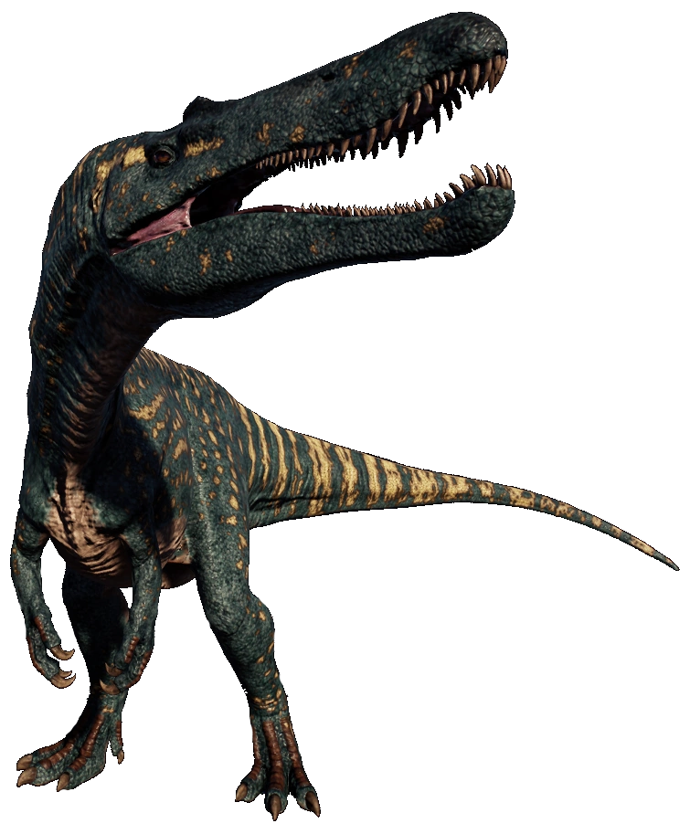
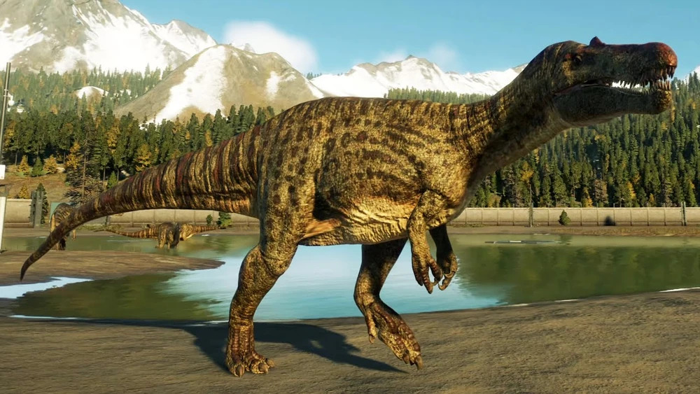
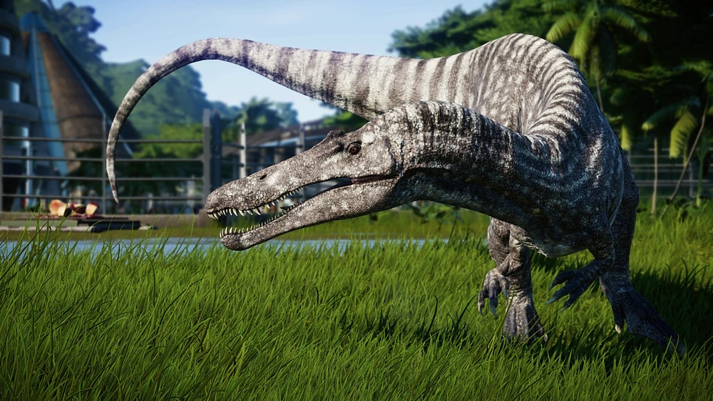
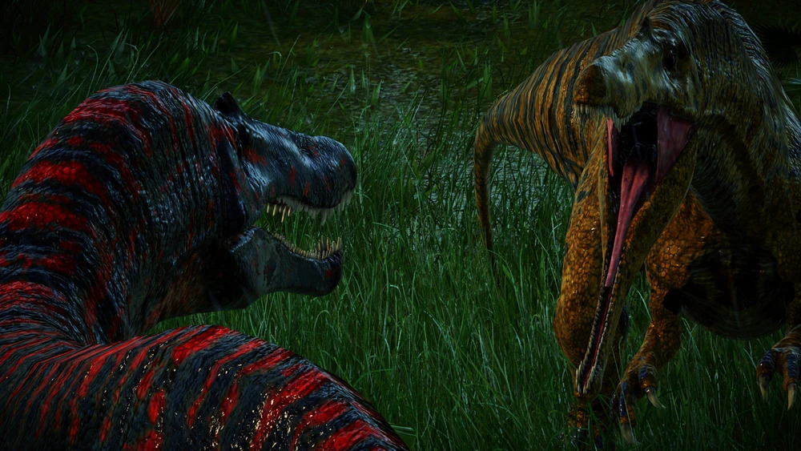
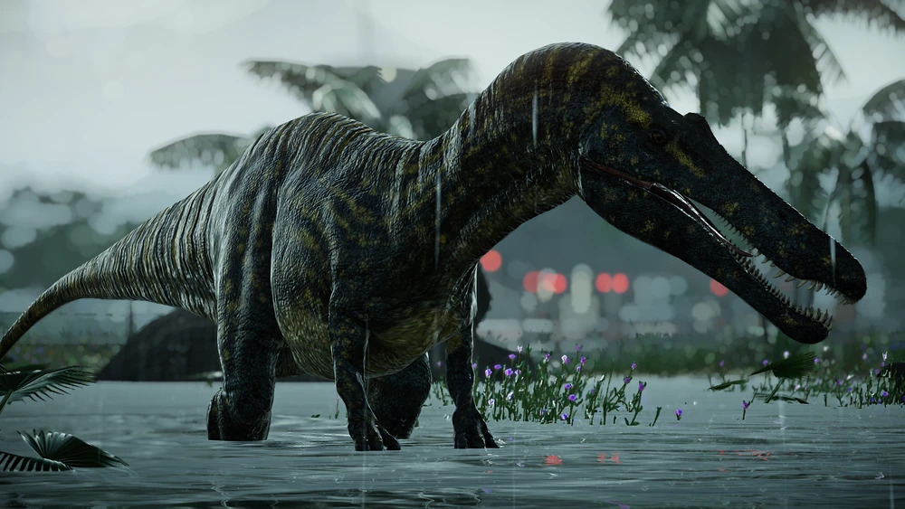
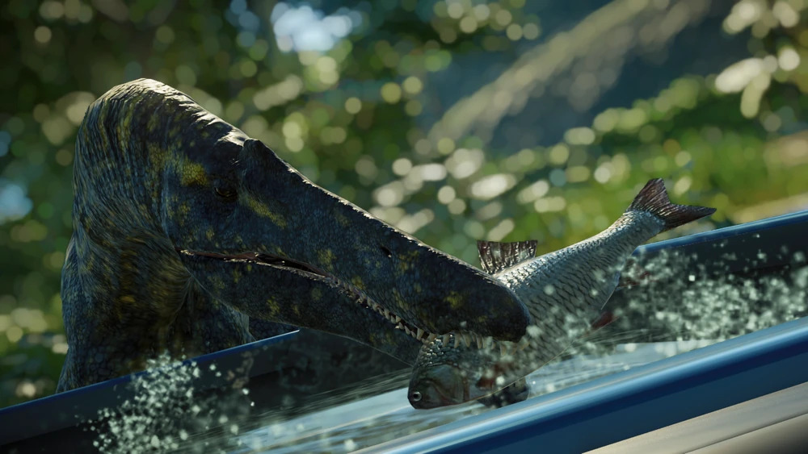
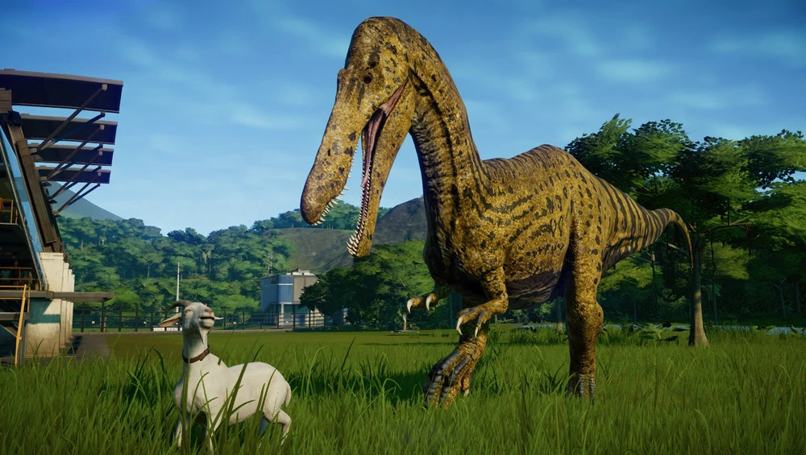

Suchomimus es un género de dinosaurio espinosáurido. Originario del Cretácico Inferior de África, se caracteriza por su cráneo largo y poco profundo, similar al de un cocodrilo.
Originario de África durante el período Cretácico Medio, hace unos 112 millones de años, Suchomimus es una especie grande de dinosaurio espinosáurido conocida por su apariencia inusual y estrechamente relacionada con el más pequeño Baryonyx (Suchomimus hasta se creyó que solo era una especie africana de Baryonyx cuando los primeros fósiles del género fueron encontrados) y el más grande Spinosaurus. Suchomimus puede pesar hasta 3,5 toneladas, medir 11,5 metros de largo y se distingue por su hocico alargado. Aunque su cuerpo es similar al de sus otros parientes, su largo hocico guarda cierto parecido con el de un cocodrilo actual; de hecho, su nombre se traduce como "imitador de cocodrilo" debido a su hocico parecido al de un cocodrilo, a pesar de lo delgado y alargado que es dicho hocico, a diferencia del cráneo más ancho de un cocodrilo. Con grandes garras en las manos para atrapar y matar peces y animales pequeños, su hocico habría sido más adecuado para la caza de peces que los cráneos de los terópodos habituales, como el del Tyrannosaurus. Solo se conoce una especie de este género y, a diferencia del Spinosaurus, probablemente carecía de la gran vela dorsal; sin embargo, poseía espinas neurales elevadas, que posiblemente sostenían una joroba o una vela más pequeña.
Suchomimus es un descubrimiento relativamente reciente en el mundo de los dinosaurios, cuyos primeros fósiles se hallaron en 1997. Un equipo liderado por el paleontólogo estadounidense Paul Sereno desenterró numerosos huesos mientras exploraba un yacimiento en Gadoufaoua, Níger, incluyendo una gran garra. Un año después, su hallazgo fue clasificado oficialmente como un nuevo género y recibió el nombre de Suchomimus. Desde entonces, se han encontrado otros esqueletos parciales y fragmentos en la Formación Erlhaz. Suchomimus habitó Níger durante el Cretácico Inferior. Con una longitud de 11 m y un peso de casi 4 t, Suchomimus es uno de los mayores de la familia de los espinosáuridos, eclipsado por parientes más grandes como el Spinosaurus. La dieta de Suchomimus consistía principalmente en grandes peces que capturaba en deltas y ríos, dinosaurios de tamaño pequeño a mediano, pterosaurios y animales carroñeros. Mientras que sus mandíbulas estrechas —con 122 dientes curvos y aserrados, poco afilados— se consideraban frágiles para atrapar presas grandes. Al igual que el Spinosaurus, el Suchomimus tenía vértebras elevadas que sostenían una pequeña joroba de grasa, una característica común en muchos espinosáuridos. Un estudio sobre los espinosáuridos concluyó que poseían una fuerza de mordida considerable. En el caso del Suchomimus, su fuerza de mordida es probablemente comparable a la de los caimanes, lo que demuestra su probable capacidad para capturar presas terrestres.
Suchomimus data del Cretácico Inferior, hace entre 125 y 100 millones de años, y habitó el clima tropical de Níger, que en aquel entonces era un hábitat interior con extensas llanuras aluviales de agua dulce y ríos caudalosos, con un clima tropical que probablemente experimentaba períodos secos estacionales. Entre los depredadores ápice de su época y región, permanecía cerca de las llanuras aluviales y los ríos, donde la vegetación y el agua eran más abundantes. Convivió con una miríada de otros géneros de dinosaurios y animales prehistóricos, incluyendo el ornitópodo Ouranosaurus, el saurópodo Nigersaurus, el mundialmente famoso pariente de los cocodrilos Sarcosuchus y el carcharodontosáurido Eocarcharia, un posible taxón quimérico que se ha considerado que incluye material fósil de espinosáuridos barioníquidos, el mismo grupo al que pertenece Suchomimus.





